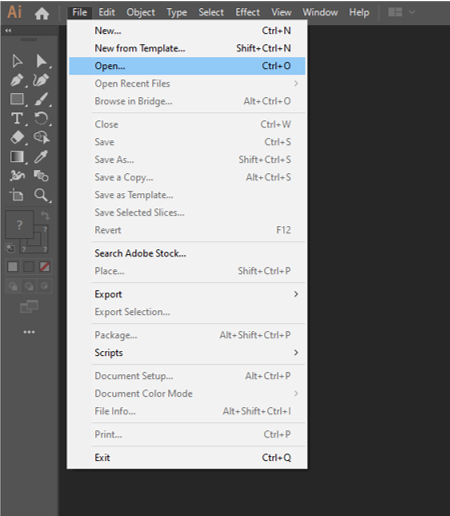
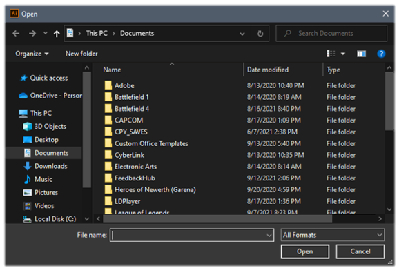
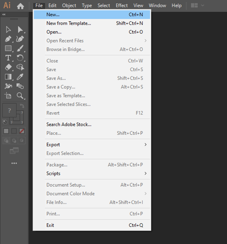
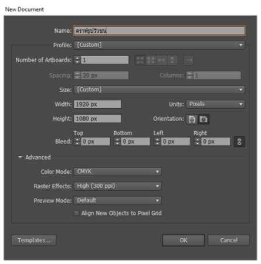
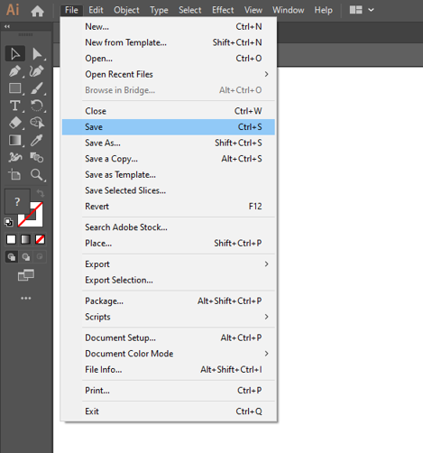
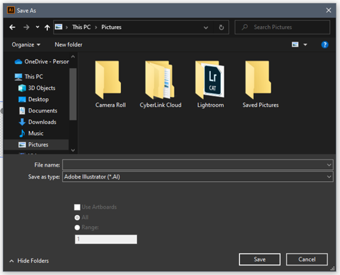

การสร้างไฟล์งานในโปรแกรม Adobe Illustrator CS6
การเปิดไฟล์งานด้วยคำสั่ง Open
ในการสร้างขึ้นงานเราต้องเปิดไฟล์ขึ้นงานจากแหล่งข้อมูลต่าง ๆ เช่น จากแผนซีดี กล้องดิจิทัล หรือไฟล์ขึ้นงานในเครื่องคอมพิวเตอร์ ซึ่งขั้นตอนการเปิดไฟส์ขึ้นงานมีดังนี้
1) คลิกแถบคำสั่ง File
2) เลือก Open หรือกดแป้น <Ctrl + 0> ที่คีย์บอร์ด

1 ) จะปรากฎหน้าต่าง Open เลือกตำแหน่งที่เก็บไฟล์ภาพแล้วเลือกไฟล์ภาพที่ต้องการ
2) คลิกปุ่ม Open

การสร้างไฟล์ใหม่ให้เหมาะกับขึ้นงาน
เมื่อได้จัดเตรียมภาพที่นำมาใช้ และได้ร่างชิ้นงานที่สร้างเรียบร้อยแล้ว ในหัวข้อนี้ จะทำการสร้างไฟล์ชิ้นงานใหม่ตามขนาดและความละเอียดที่ต้องการ ซึ่งผู้ใช้ควรกำหนดให้เหมาะกับลักษณะงาน โดยมีขั้นตอนดังต่อไปนี้
1 ) คลิกแถบคำสั่ง File
2) เลือก New หรือกดแป้น <Ctrl+N>ที่คีย์บอร์ด

3) จะปรากฎหน้าต่าง New Document คลิกช่อง Size เลือกขนาดชิ้นงาน มีขนาดต่าง ๆให้เลือก หรือกำหนดขนาดชิ้นงานเองก็ได้
4) เลือกหน่วยวัดของชิ้นงานในช่อง Units ซึ่งมีหนวยต่าง ๆ เช่น Milimeter,Points,Picas, Pixel
5) กำหนดรูปแบบการจัดวางชิ้นงาน คือ ชิ้นงานแนวตั้ง ชิ้นงานแนวนอน
6) กำหนดโหมดสีของชิ้นงาน มีให้เลือก 2 ชนิด คือ CMYK (ใช้สำหรับงานสิ่งพิมพ์)
และ RGB (ใช้สำหรับสร้างเว็บ หรืองานนำเสนอ)
7) กำหนดรายละเอียดของชิ้นงาน ได้แก่ Screen (72 ppi) สำหรับภาพบนเว็บ
Medium ( 150 ppi) และ High (300 ppi) สำหรับงานสิ่งพิมพ์ ส่วน Preview Mode เป็นการกำหนดรูปแบบในการแสดงขึ้นงาน ให้ใช้ค่เป็น Default
8) คลิกปุ่ม OK เพื่อสร้างชิ้นงานตามขนาดและค่าสีที่กำหนด

กำหนดไฟล์วัตถุตามค่ามาตรฐาน
ในงานต้านกราฟิกที่ต้องทำบ่อย ๆ ก็จะมีค่าขนาดของไฟล์ชิ้นงานมาตรฐานที่กำหนดไว้แล้ว ในโปรแกรม lllustratorให้เราเรียกใช้ได้เลย ในช่อง New Document Profle โดยมีแบบต่าง ๆ ดังนี้
กำหนดไฟล์วัตถุตามค่ามาตรฐาน
Print มาตรฐานสำหรับสื่อสิ่งพิมพ์
Web มาตรฐานสำหรับเว็บ
Mobile and Device มาตรฐานสำหรับอุปกรณ์พกพา
Video and Film มาตรฐานสำหรับสื่อวิดีโอ
Basic CMYK มาตรฐานสำหรับสิงพิมพ์ทั่วไป
Basic RGB มาตรฐานสำหรับกราฟิกทั่วไป
การบันทึกไฟล์ที่สร้างขึ้นมา
เมื่อเราสร้างขึ้นงานเสร็จแล้ว จะต้องบันทึกอาร์ตเวิร์คเก็บไว้เป็นไฟล์เอกสาร เพื่อให้สามารถเปิดกลับมาเเก้ไขหรือทำงานต่อในภายหลังได้ โดยมีขั้นตอนในการบันทึกไฟล์ดังนี้
1) เลือกแถบคำสั่ง File
2) เลือก Save หรือคดแป้น <Ctrl + S> ที่คีย์บอร์ด

3) ปรากฎหน้าต่าง Save As ขึ้นมาเลือกตำแหน่งสำหรับเก็บไฟล์งาน
4) ตั้งชื่อไฟล์ในช่อง File Name
5) จากนั้นคลิกที่ช่อง Save as type แล้วเลือกฟอร์แมตไฟล์ที่ต้องการซึ่งปกติควร
เลือกเป็น Adobe lllustrator (*AI)
6) คลิกปุ่ม Save เพื่อทำการบันทึกไฟล์

 
|